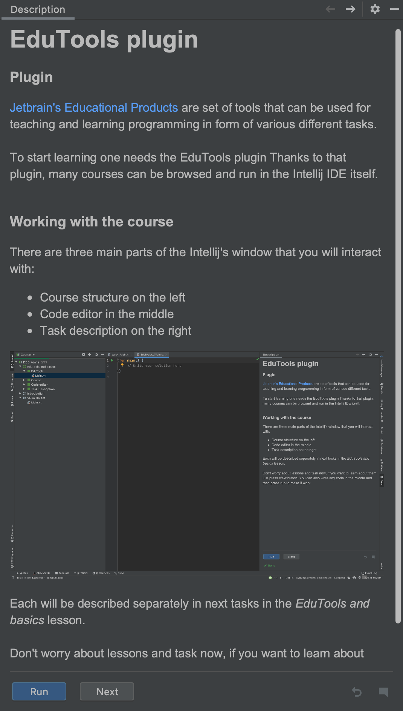
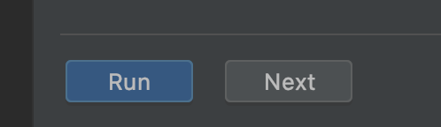
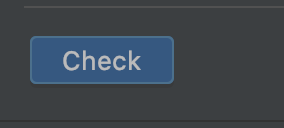
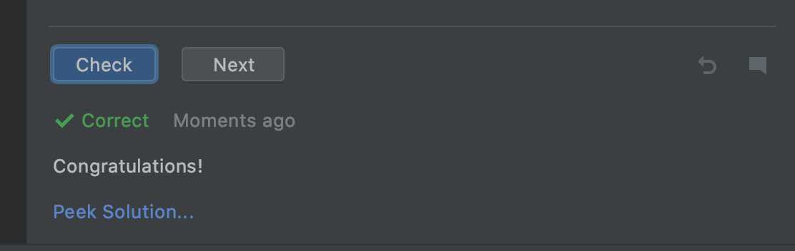
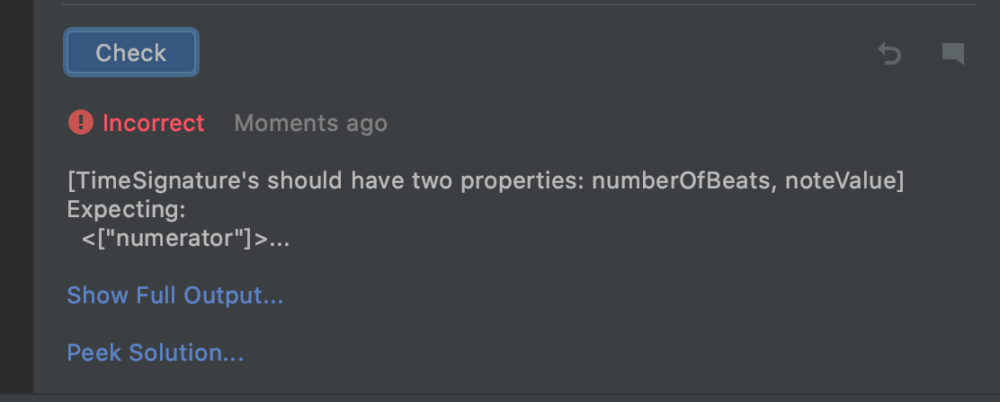
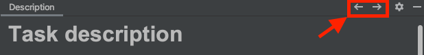

Task description provides all information that is needed to solve the problem. Please read it carefully not to miss any important requirement for the task to be solved.
The task description bar also provides button to Check, Run and go to Next task/lesson buttons.
If there are buttons Run and Next available since the beginning like in this task, then there is no validation and this is the theoretical type of the task. You can just go further, however, we do recommend reading the task description and the code. 
If there is the Check button you are expected to provide the code and the after pressing the button your work would be validated. 
Then, the feedback will be provided and if tests are passed you will be able to go further with the familiar Next button. 
If there is any failure, the message about what went wrong will be displayed. 
In the end, it is worth mentioning that there is an additional way to navigate through the course. As you can see in the below picture, there are two arrows present in the top right corner of the task description sidebar.  The left arrow makes one available to go to the previous task and the right to the next task. However, we do not recommend the usage of the arrows as they let one go to the next task without completing the current one. It works terribly in the case of tasks that use the code provided in previous ones.
Remember that the last two button, under the dividing line, are real and please press next :)